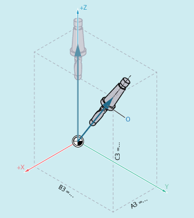

Weitere Informationen
In der Regel werden 5-Achs-Programme von CAD/CAM-Systemen erzeugt und nicht an der Steuerung eingegeben. Deshalb wenden sich die folgenden Erklärungen hauptsächlich an Programmierer von Postprozessoren.
Folgende Befehle zur Orientierungsprogrammierung stehen zur Verfügung:
Befehl | Bedeutung |
|---|---|
| Euler-Winkel mit Drehreihenfolge ZX'Z'' |
| RPY-Winkel mit Drehreihenfolge XY'Z'' |
| RPY-Winkel mit Drehreihenfolge ZY'X'' |
| Virtuelle Orientierungsachsen mit frei definierbarer Drehreihenfolge über: MD21120 $MC_ORIAX_TURN_TAB_1 |
| Virtuelle Orientierungsachsen mit frei definierbarer Drehreihenfolge über: MD21130 $MC_ORIAX_TURN_TAB_2 |
| Virtuelle Orientierungsachsen mit Rundachspositionen |
| Hinweis |
Über Maschinendaten können vom Maschinenhersteller verschiedene Varianten definiert werden. Bitte beachten Sie die Angaben des Maschinenherstellers. |
Programmierung in Eulerwinkeln (ORIEULER), Drehreihenfolge Z X' Z''
Die bei der Orientierungsprogrammierung ORIEULER mit A2, B2, C2 programmierten Werte werden als Eulerwinkel (in Grad) interpretiert.
Der neue Orientierungsvektor ergibt sich durch folgende drei Drehungen des ursprünglichen Orientierungsvektors:
mit der Rundachse A2 um die Koordinatenachse Z
mit der Rundachse B2 um die neue Koordinatenachse X'
mit der Rundachse C2 um die neue Koordinatenachse Z''
In diesem Fall ist der Wert von C2 (Drehung um neue Z-Achse) bedeutungslos und muss nicht programmiert werden.
Programmierung in RPY-Winkeln (ORIRPY), Drehreihenfolge X Y' Z''
Die bei der Orientierungsprogrammierung ORIRPY mit A2, B2, C2 programmierten Werte werden als RPY-Winkel (in Grad) mit der Drehreihenfolge X Y' Z'' interpretiert.
| Hinweis |
Im Gegensatz zur Programmierung mit ORIEULER haben bei ORIRPY alle drei Werte Einfluss auf den Orientierungsvektor. |
Der neue Orientierungsvektor ergibt sich, durch folgende drei Drehungen des ursprünglichen Orientierungsvektors:
mit der Rundachse A2 um die Koordinatenachse X
mit der Rundachse B2 um die neue Koordinatenachse Y'
mit der Rundachse C2 um die neue Koordinatenachse Z''
Programmierung des Richtungsvektors
Die Komponenten des Richtungsvektors werden mit A3, B3, C3 programmiert. Der Vektor zeigt in Richtung Werkzeugaufnahme; die Länge des Vektors ist dabei ohne Bedeutung.
Nicht programmierte Vektorkomponenten werden gleich Null gesetzt.
X, Y, Z | Koordinatenachsen des WKS |
A3, B3, C3 | Komponenten des Richtungsvektors |
O | Orientierungsvektor |
Programmierung des Richtungsvektors
Programmierung der Werkzeugorientierung mit LEAD und TILT
Die resultierende Werkzeugorientierung wird ermittelt aus:
Bahntangente
Flächennormalenvektor
Am Satzanfang A4, B4, C4 und am Satzende A5, B5, C5
Voreilwinkel LEAD
Winkel in der von Bahntangente und Flächennormalenvektor aufgespannten Ebene
Seitwärtswinkel TILT am Satzende
Winkel in der Ebene senkrecht zur Bahntangente relativ zum Flächennormalenvektor

T | Bahntangente |
S | Senkrechte zur Bahntangente |
N | Flächennormale |
B | Bahn |
TCP | Tool Center Point |
O | Orientierungsvektor |
Programmierung von LEAD TILT
| Hinweis |
Verhalten bei Innenecken bei 3D-WZKWenn der Satz an einer Innenecke verkürzt wird, wird die programmierte Werkzeugorientierung trotzdem am Satzende eingenommen. |